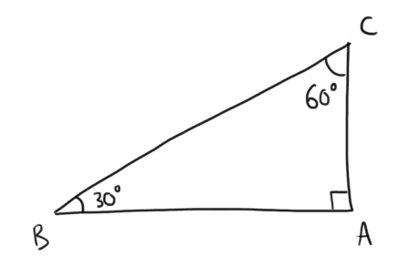
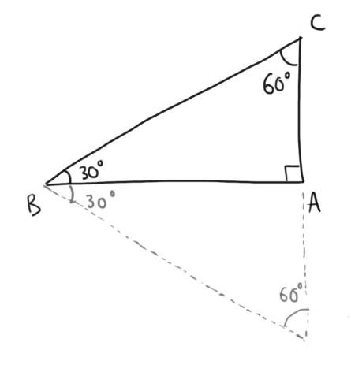

Di seguito l'elenco degli argomenti svolti fino ad ora.
Considerate il triangolo rettangolo in figura.
.png)
Supponiamo che la misura del lato \(AB\) sia \(k\). Siccome il triangolo isoscele, sappiamo che anche il lato \(AC\) misura \(k\).
Suggerimento:
Trovate l'ipotenusa \(AB\) applicando il teorema di Pitgora.
Successivamente applicate la definizione di seno, coseno e tangente utilizzado le misure dei cateti fornite dal problema e quella dell'ipotenusa che avete trovato al passo precedente.
Considerate il triangolo rettangolo in figura.
Supponiamo che la misura di \(BC\) sia \(k\). Osserviamo che il triangolo è esattamente la metà di un triangolo equilatero.
Da questo possiamo dedurre che il lato \(AC\) misura la metà del lato \(BC\), ovvero \(\overline{BC} = \dfrac{k}{2}\)
Suggerimento:
Trovate il cateto maggiore \(AB\) applicando il teorema di Pitgora.
Successivamente applicate la definizione di seno, coseno e tangente utilizzado le misure del cateto minore ed ipotenusa fornite dal problema e del cateto maggiore che avete trovato al passo precedente.